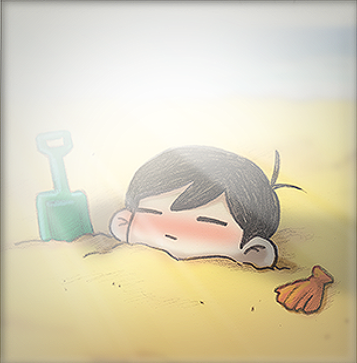
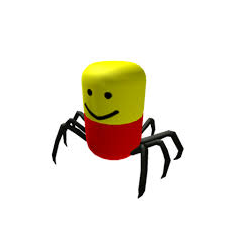

Potato's Basement
Home
Discord
Rules
Contacts
Creators

FarDev
AKA Farhan

Poco Loco
AKA Ben
About
Potato's Basement is basically a place to relax and chill.
Here's a wiki link to potato history for your troubles
Potato History
Notice
This website is just a prototype and is not the finalized
website. I will update the website every week or so until
the finalized version is done.